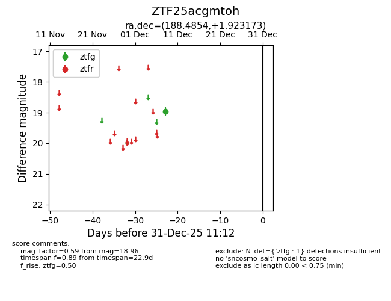
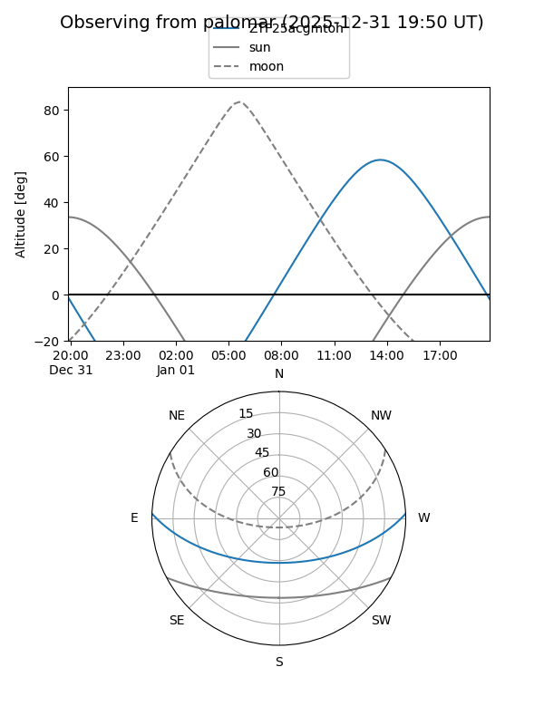

ZTF25acgmtoh
Target ZTF25acgmtoh at 2025-12-18 11:17
Aliases and brokers:
FINK: fink-portal.org/ZTF25acgmtoh
Lasair: lasair-ztf.lsst.ac.uk/objects/ZTF25acgmtoh
ALeRCE: alerce.online/object/ZTF25acgmtoh
alt names
ZTF25acgmtoh (ztf,fink_ztf)
Coordinates:
equatorial (ra, dec) = 188.4854,+1.92317
equatorial (HMS+DMS) = 12:33:56.51,+01:55:23.42
galactic (l, b) = (292.7530,+64.44859)
Photometry
last ztfg=18.96
1 ztfg detections
Lightcurve

Visibility


Additional plots